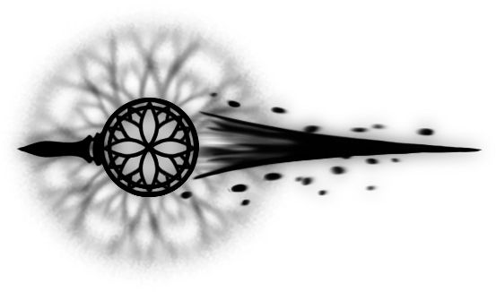
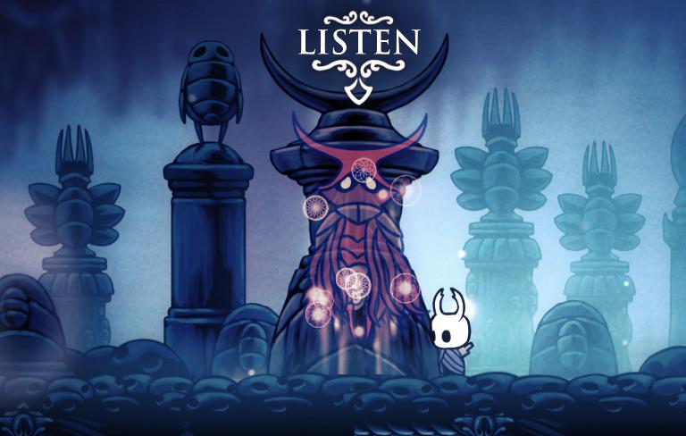
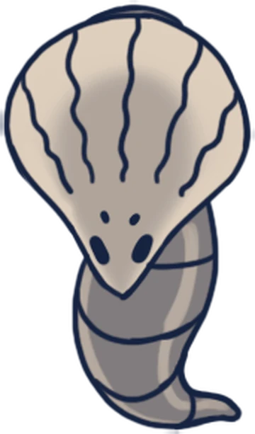
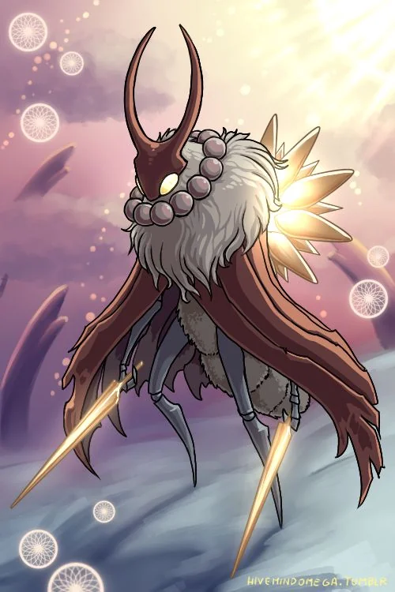
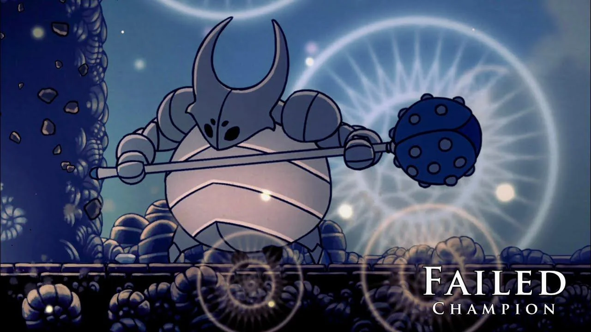
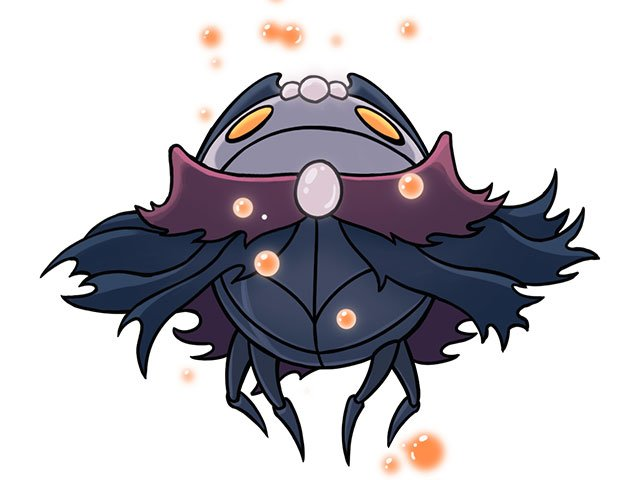
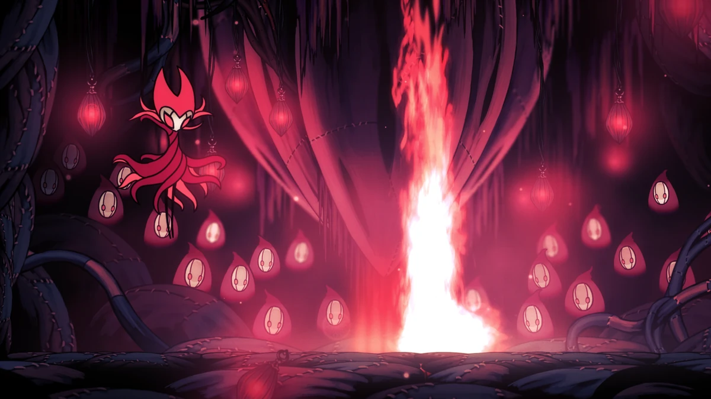

Compendio de los Sueños y Pesadillas

El Despertar de la Esencia
El Aguijón Onírico no es un arma física, sino una llave. Permite al Caballero recolectar Esencia, la sustancia de los sueños. Sin ella, es imposible acceder al Palacio Blanco o enfrentar al jefe final verdadero. La Vidente, última de la tribu de las polillas, nos guiará en este viaje espiritual.
Mecánica de Recolección
- Enemigos comunes: Dan alma pero no esencia.
- Raíces Susurrantes: Liberan orbes de esencia por toda la zona.
- Fantasmas de Lore: Diálogos ocultos y 1 de esencia al disiparlos.
- Jefes Oníricos: La fuente principal (cientos de puntos por victoria).
I. Los Guerreros Oníricos
Espíritus de antiguos héroes estancados en sus lugares de entierro. Cada uno ofrece un fragmento de su historia y una cantidad moderada de esencia.

Xero (Las Tierras de Reposo)
Ejecutado por traición. Ataca lanzando clavos flotantes. Recompensa: 100 Esencia.
Gorb (Acantilados Aulladores)
"¡Yo soy Gorb!". La mente superior que dispara ráfagas de aguijones en 360 grados. Recompensa: 100 Esencia.

Anciano Hu (Páramos Fúngicos)
Ataques rítmicos de columnas de luz. Requiere el Dash Sombrío para sobrevivir. Recompensa: 100 Esencia.
Markoth (Límite del Reino)
El más letal. No tiene suelo, peleas en plataformas mientras esquivas su escudo y clavos. Recompensa: 250 Esencia.

Otros Guerreros: Marmu (150 E) en Jardines de la Reina, No Eyes (200 E) en Sendero Verde y Galien (200 E) en Nido Profundo.
II. Jefes Pesadilla: Reminiscencias
Versiones potenciadas de los jefes de Hallownest. Son más rápidos, agresivos y quitan 2 máscaras de daño por golpe.

Campeón Fallido
La pesadilla del Falso Caballero. Su velocidad de salto es casi instantánea y las rocas caen sin parar.
Esencia: 300
Tirano de Almas
La forma perfecta del Maestro de Almas. Teletransportes erráticos y una lluvia de orbes constante.
Esencia: 300


Príncipe Gris Zote
La imaginación de Bretta hecha jefe. Caótico, ruidoso y letal. Puede llegar a quitar 10 máscaras por golpe.
Esencia: 300
III. El Reino de la Pesadilla Roja

Rey Pesadilla Grimm
El jefe onírico más rápido fuera del DLC Godmaster. No es solo una pelea, es un baile rítmico donde un solo error significa la derrota. Representa el corazón de la Pesadilla y el ciclo eterno de la Compañía.
Variantes de Godmaster (Godhome)
En el Hogar de los Dioses, los sueños se vuelven "Absolutos". Aquí encontramos las versiones definitivas:
- Pure Vessel (Receptáculo Puro): El Hollow Knight en su máximo esplendor sin infección.
- Sisters of Battle: Las 3 Mantis atacando simultáneamente.
- Absolute Radiance: La forma final de la luz, el reto más grande del juego.